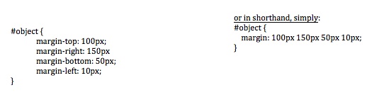
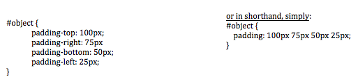
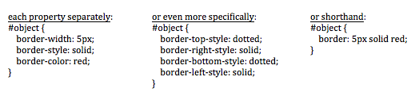

Margin, Border, and Padding
Navigating the Box Model in Web Design
3/7/15
Consider an object on a webpage. It can be an image, a body of text, a link, etc. How does a web developer describe the space around the content of that object? Some of the basic things you can think about in terms of design are the placement of the object within a webpage or relative to other objects, a possible border or background color to draw attention to the object, and infinitely more details. But for now let’s focus on the three main spatial terms that we deal with in web design: margin, border, and padding.
Below is a simple illustration of the relationship between these three elements (also known as the Box Model):
Setting the parameters for each of these components is fairly straightforward. For example, in CSS the margin for our “object” can be formatted in the following way:

Conveniently, the padding can be defined in a similar way:

Note that pixels are not the only unit of space. You could also set your measurements in terms of an “em” or as a percentage of the screen. Also, in the name of full disclosure, I should point out that there are other forms of shorthand, but for elementary purposes I’m only showing a couple of the fundamental forms of syntax.
Border has even more parameters you can define. While the placement of the border relative to the object is pre-defined by the padding, you can specify properties like width, style (such as dashed, dotted, or solid), and color. You can arrange your definitions in a number of ways:

So, you see, it is very easy to define the spatial structure of an object on a webpage to get it to appear just the way you’d like it. You can have a border that can be as close to or far away from your object as you’d like, as determined by the padding. And beyond the border the margin can help place your object within the webpage. It’s up to the designer to decide how best to manipulate these elements. There are so many combinations of adjustments possible, you can be as creative as you’d like!